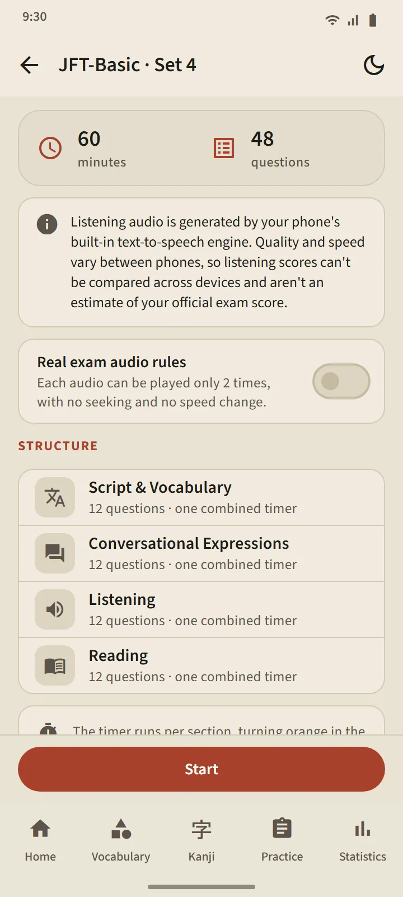
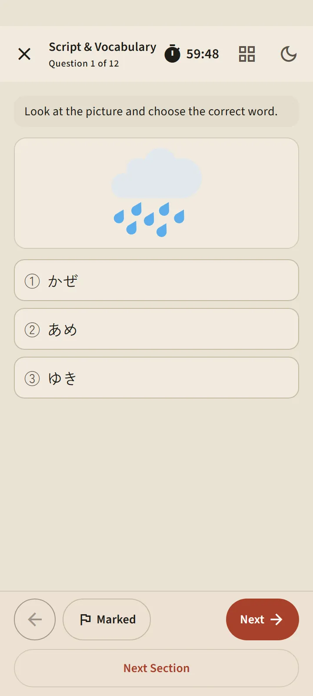
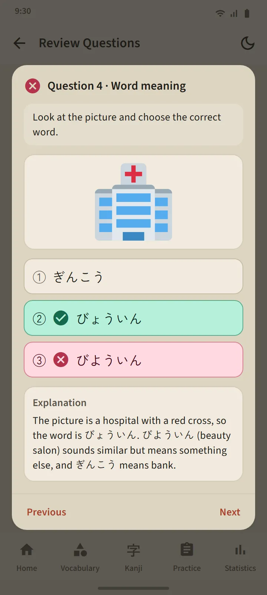

Six levels, 24 sets
Each level card in the Practice tab opens the level page: a Start button, numbered set tiles, and history. Once every set is done, Mixed practice opens, putting questions you have never seen first. New sets arrive through app updates.
| Exam | Sets | Questions per set | Time |
|---|---|---|---|
| JFT-Basic | 8 | 48 | 60 minutes |
| JLPT N5 | 8 | 68 | 90 minutes |
| JLPT N4 | 2 | 85 | 115 minutes |
| JLPT N3 | 2 | 102 | 140 minutes |
| JLPT N2 | 2 | 107 | 155 minutes |
| JLPT N1 | 2 | 101 | 165 minutes |


Question forms follow the real exams
JFT-Basic questions use three choices (four in grammar), situations and prompts in the learner's language, and a picture in many questions, like the official sample questions. JLPT questions use four choices, furigana appropriate to the level, and reading texts in varied forms: short stories, memos, notices, messages, emails and information tables. Every set is audited before release, and no official questions are copied.
Before you start, the briefing screen shows that set's structure: sections, question counts and timing. Timing follows the real exams: one combined time in JFT-Basic, a time per section in the JLPT. After you move on, the previous section closes, just like in the exam room. You can flag doubtful questions, leave temporarily (the clock keeps running), and resume from the Practice tab.


Listening in your phone's Japanese voice
Listening scripts are read by your phone's Japanese text-to-speech engine, with a different voice for each speaker. The answer choices are only heard, not printed, as in the real exam; JFT-Basic and N5 use picture choices. The "Real exam audio rules" switch limits playback to what the real exam allows: twice in JFT-Basic, once in the JLPT.
Because the voice comes from each phone, quality differs between devices; if a phone has no Japanese voice yet, the app shows how to install one and the listening part is skipped until it exists.

Results on the official scales, then every question explained
JFT-Basic results are drawn on the 10–250 line with marks at 145, 175 and 200 and their band names, A1, A2.1 and A2.2, plus what each band is used for in the real exam. JLPT results show each scoring section against its minimum, because in the real exam one section below the minimum means a fail. Both come with percent correct per section and per question type.
The Review button opens every question with your answer, the correct answer and an explanation; listening questions also show their script. Explanations are available in 12 languages. Each level's history keeps your latest runs, and the score chart lives in the Statistics tab.
These scores are an estimate for tracking progress, not a prediction of your official result.


Free and Premium
Every set is open on the free version. After you press Start, the next run at that level is locked for 7 days; other levels stay open, and history and explanations are never locked. While locked, you can unlock one extra run by watching an ad. Premium has no pause. Ads never appear on question screens, for anyone.